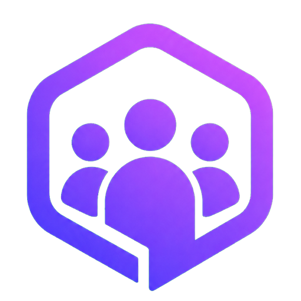

Ekran kilitliyken de konuşmak için uygulamada aç.
PC'de TURN ayarlıysa telefon onu odadan otomatik alır. Ayrı bir sunucu kullanmak istersen gir.
Şimdilik yalnızca sesli odaya katılma var. Hesap, arkadaşlar ve mesajlar sonraki sürümlerde gelecek.
Bağlanıyor… · 0:00
PC'den biri katılınca burada görünür. Oda kimliğini paylaşmak için yukarıdaki kimliğe dokun.